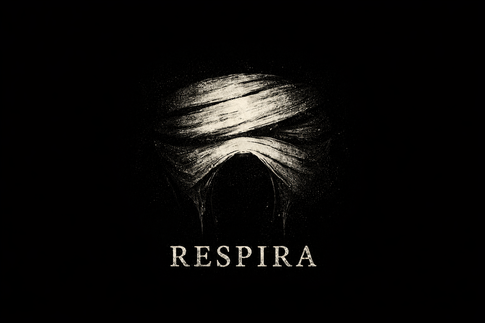

Global Game Jam 2026 / 2 días y medio
Respira
Experiencia narrativa/inmersiva creada casi en solitario durante Global Game Jam 2026, con énfasis en diseño auditivo, accesibilidad y atmósfera.

Contexto
Proyecto realizado para la Global Game Jam 2026 en dos días y medio, útil para mostrar sensibilidad hacia narrativa interactiva, audio y accesibilidad en experiencias de juego.
Aporte
Desarrollé casi todo el proyecto, cubriendo programación, integración, estructura jugable y cierre de la experiencia dentro del tiempo de la jam.